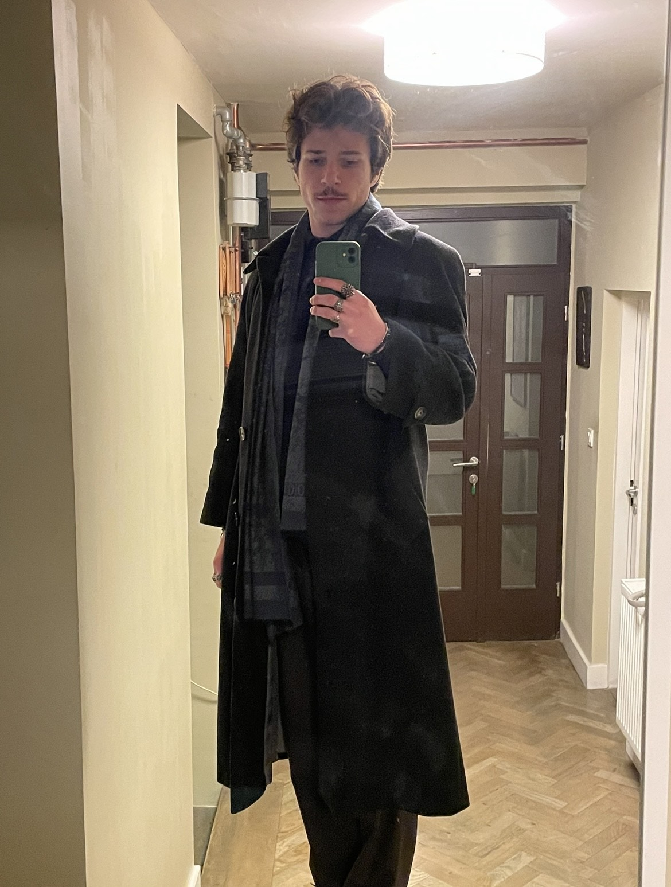
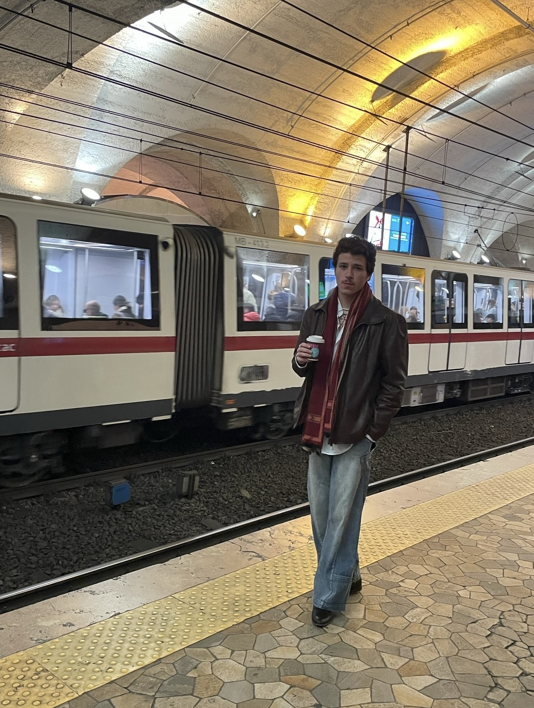
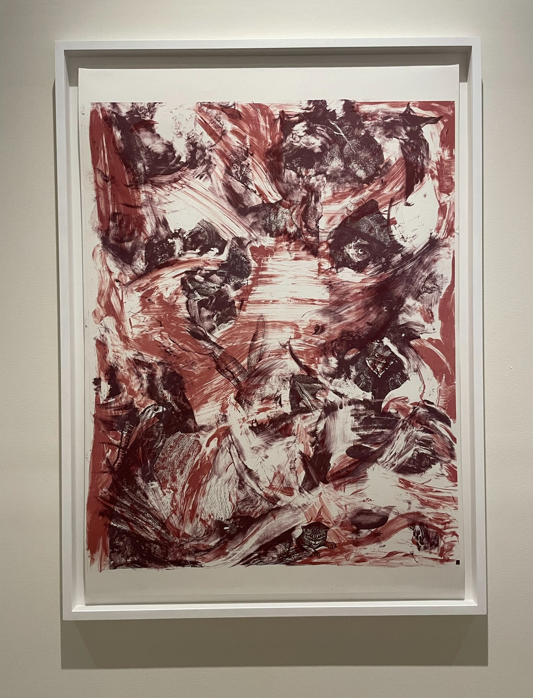

- Moje ime je Ruđer Lovrić Jović, što ste mogli već zaključiti. Tek sam nedavno stupio u takozvani život odraslih, napunivši 20 godina. Rođen sam te živim u Zagrebu s bratom blizancem, starijom sestrom te sa svojim roditeljima. Studiram grafički dizajn, no moj izbor studija opisuje samo mali dio mojih strasti. Jedna od najvećih i naj očiglednijih strasti jest moda, "second hand" trgovine te općenito uljepšavanje te nadogradnja svoga izgleda.
Od medija se upuštam u sve, od filmova, serija, anime-a, pa do svakakve glazbe. Na sreću nisam zapeo u samo elektronskom svijetu. Nedavno sam osvjestio želju te sklonost čitanju, gledanju predstava, koncerata, opera, obilaska muzeja te strast za umjetnošću općenito. Zahvaljujući svojim roditeljima uspio sam zavoljeti putovanja te ih tako i iskusiti. S prijateljima se volim zabavljati po kućama, mirnim druženjima no također i po klubovima, kafićim, barovima,itd. Što se tiće sportskih aktivnosti, zanima me odbojka te redovno idem u teretanu.
To bi ukratko bio ja.
MODA
Moj se stil, kao i svačiji, jako puno razvijao i mijenjao, no već neko vrijeme odjeću kupujem samo po "second hand" trgovinama te miješam stilove.
Inspiraciju dobivam od svugdje, filmova, serija, Pinteresta, ljudi koje poznajem, pa čak i iz anime-a
filmovi:
anime (Bleach):
moji outfiti:


PUTOVANJA
Zbog obitelji sam putovao svugdje, od gradova u Hrvatskoj, po balkanu, pa do Italije, Španjoslke, Francuske pa čak i do Sjedinjenih Američkih Država. Kod putovanja najviše uživam upoznavajući tuđe kulture, vidjevši što više mjesta koje posjećujem te ići u što više lokala
mjesta koje sam posjetio:
Italija
SAD
Španjolska
Češka
Austrija
Francuska
ANIME
Anime sam počeo gledatio prije otprilike 4 godine i iako sam u početku mislio da takvo što samo djeca gledaju, itekako sam se iznenadio da to nije tako. Mnogi svetonazori su mi se promijenili zbog anime-a te sam putem njih i upoznao ljude koje sad zovem obetlj.
najdraži anime-i:
UMJETNOST
Kroz zadnjih par godina prestao sam razmišljati kako djeca razmišljaju je te govore kako je umjetnost dosadna. Jako sam zavolio ići u muzeje te izložbe, a najdraži pravac umjetnosti mi je renesansa, a najdraža umjetnička tehnika ulje na platnu.
draga umjetnička djela:

GLAZBA
Glazba je jako bitan dio moga života. Glazba mi jednostavno uljepša svaki dan, nevezano kakva je, kakva god bila, umjetnost je. Pomaže mi kada sam tužan, pod stresom, uljepšava mi tremnutke kada sam sretan te me motivira u nekim stvarima (npr. gym)
/IMG_8711.jpeg)